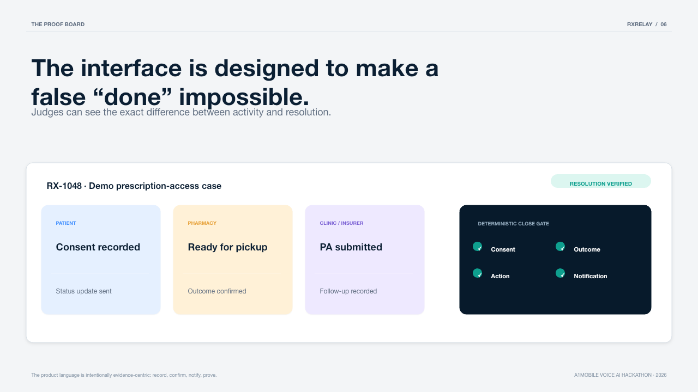
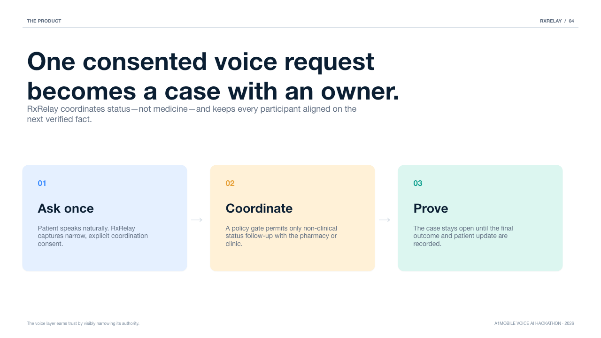

Coupling cliff
Paper finding: factual quality collapses as ASR WER rises. RxRelay detects near-cliff turns and jointly upgrades ASR + reasoning — never the LLM alone.
Built on PAVO · TMLR 2026 · a1mobile Voice AI Hackathon
RxRelay coordinates prescription-access follow-ups with explicit consent — and refuses to close a case until the evidence exists. When speech gets uncertain, it upgrades transcription and reasoning together, because a stronger LLM cannot repair a misheard authorization number.
Research foundation
From PAVO: Pipeline-Aware Voice Orchestration with Demand-Conditioned Inference Routing (VeiluKanthaPerumal & Imthathullah, TMLR 2026): upstream ASR quality bounds what a downstream LLM can recover. RxRelay implements that coupling constraint in production voice turns.
Paper finding: factual quality collapses as ASR WER rises. RxRelay detects near-cliff turns and jointly upgrades ASR + reasoning — never the LLM alone.
Each turn gets a demand score from confidence, noise, critical entities, partner-action risk, and history. High demand → cloud-premium pipeline.
Clinical advice, emergencies, Rx changes, and controlled-inventory queries never reach action models. Safe-stop is evaluated first.
ondevice_fast · hybrid_balanced · cloud_premium · hard-constraint mask — mapped onto Fast / Balanced / Verified / Safe stop.
Paper: openreview.net/pdf?id=zrneoIxlFx · Code & bench: vnmoorthy/pavo-bench · Dataset: HuggingFace PAVO-Bench
The differentiator

Architecture
The temporary public tunnel only reaches voice-server.mjs.
Dashboard, MCP, and credentials stay local. Shared case state lives in data/cases.json.

Run it
git clone https://github.com/vnmoorthy/rxrelay.git
cd rxrelay
cp .env.example .env
npm test # 11 tests, no install
npm run dev # proof board :3000
npm run live:inbound # TeXML + tunnel + pointAfter consent, say “check my prescription status” — the voice agent can walk the sandbox proof path end to end.